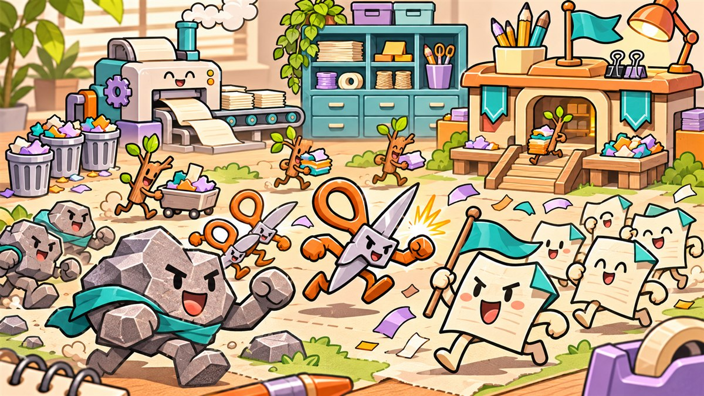

Host an online scrap
Run a casual 1v1 lobby on your Windows PC. Friends can join in their browser from the lobby list or your invite.
Browse Windows host releasesWindows x64 · Portable ZIP
SHA-256 checksum
Start a lobby
- Extract the entire ZIP and open Start Trash Tactics Host.cmd.
- When the browser opens, choose a map and create a lobby. Share your invite directly or ask friends to find you in the lobby list.
- Keep the host window open and your PC awake until the match ends.
The host uses a temporary Cloudflare address. A new session gets a new address. Ranked matchmaking runs on the Catnmice server.